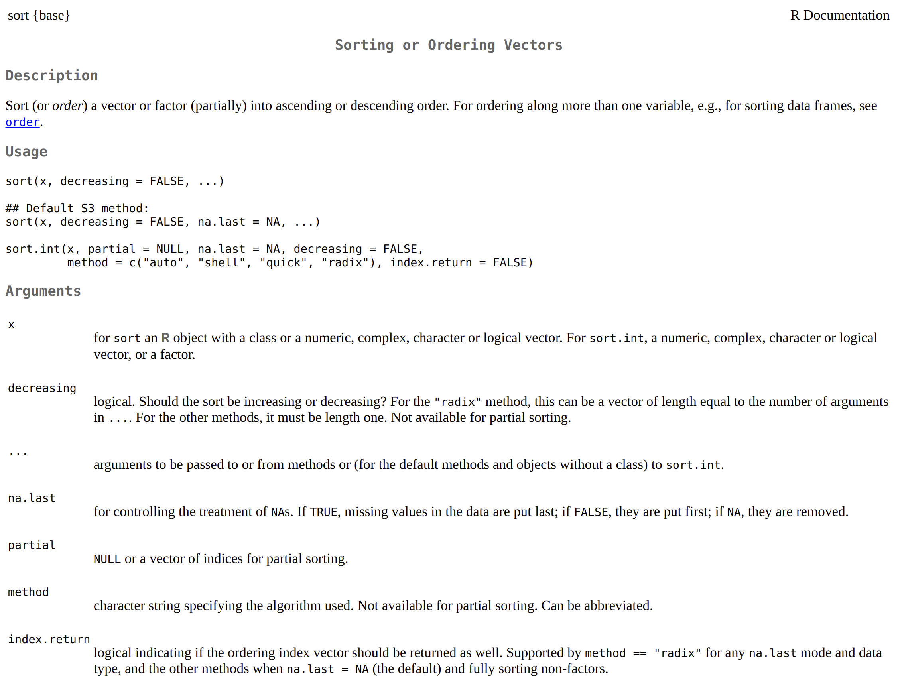

2 The Basics
2.1 R as a Calculator
1 + 1 # addition
#> [1] 2
1 - 1 # subtraction
#> [1] 0
2 * 3 # multiplication
#> [1] 6
1 + 1 * 3 # combining operations
#> [1] 4
(1 + 1) * 3 # operator precedence
#> [1] 6
3 / 2 # division
#> [1] 1.5
# ↓↓ pronounced "modulo"
3 %% 2 # division remainder
#> [1] 1
4 %/% 2 # integer division
#> [1] 2
3^2 # exponents
#> [1] 9
4**2 # also exponents!
#> [1] 16
Inf + 1 # 🤔
#> [1] InfIf your code doesn’t form a complete expression, then R will look for more on the next line.
Here’s an example:
1 + isn’t a complete expression, so R prompt for more code on subsequent lines. You’ll see something like the following:
If this happens, press the Esc(scape) key (you may have to click on the Console pane first) and fix your code.
2.2 Fundamental Types
R has several basic data types that serve as the foundation upon which everything is built.
1 # double (short for double-precision floating-point number)
#> [1] 1
3.14 # also double (we can just think of them as decimals)
#> [1] 3.14
1L # integer (`L` for "Literal" or `long` integers)
#> [1] 1
"1" # character or string (kinda... we'll discuss later)
#> [1] "1"
TRUE # logical (similar to `bool`s in other languages)
#> [1] TRUE
FALSE # also logical
#> [1] FALSE
4i # complex (we're never going to use these)
#> [1] 0+4iLike most programming languages, R lets us mix comments into our code. Anything that follows # on the same line is ignored by R.
Comments enable us to annotate our work or temporarily (hopefully) disable lines of code.
-1 * -1000 # a negative number times a negative is positive
#> [1] 1000
# TRUE + FALSE # felt cute, might un-comment later 🤷Leverage comments to communicate with humans! They’re an opportunity for explaining what something does and (often more-importantly) why something works or is necessary.
Since comments are ubiquitous, it’s worth pointing out two common conventions:
2.3 Variables
R’s assignment operator is <-.
my_first_var <- "referring to data w/ names is handy!"
my_first_var
#> [1] "referring to data w/ names is handy!"We can also use = like many other languages, but we highly discourage this (especially starting out) because we use = elsewhere. If you stick to <-, you’ll never have to guess where you’ve assigned variables or rely on context clues to predict =’s intended purpose or behavior.
You should always prefer descriptive variable names so that others can more easily understand your code. Most of the time, the other person will just be you in the future.
2.4 Multiple Values
We’ll almost always need to deal with more than one value, so R let’s us c()ombine values.
We won’t get into the nitty-gritty details just yet, but we typically call a collection of values of the same type (homogeneous) a vector.
R is special for a few reasons and having native vectors is definitely one of them. Understanding how they work is fundamental to writing good (and fast!) code.
2.5 Functions
R comes with some handy variables built-in , such as letters and LETTERS.
letters
#> [1] "a" "b" "c" "d" "e" "f" "g" "h" "i" "j" "k" "l" "m" "n" "o" "p" "q" "r" "s" "t" "u" "v"
#> [23] "w" "x" "y" "z"
LETTERS
#> [1] "A" "B" "C" "D" "E" "F" "G" "H" "I" "J" "K" "L" "M" "N" "O" "P" "Q" "R" "S" "T" "U" "V"
#> [23] "W" "X" "Y" "Z"# ↓ parameter, formal, or argument
toupper(x = letters)
#> [1] "A" "B" "C" "D" "E" "F" "G" "H" "I" "J" "K" "L" "M" "N" "O" "P" "Q" "R" "S" "T" "U" "V"
#> [23] "W" "X" "Y" "Z"
# ↓↓↓↓↓↓↓ argument (always)
tolower(x = LETTERS)
#> [1] "a" "b" "c" "d" "e" "f" "g" "h" "i" "j" "k" "l" "m" "n" "o" "p" "q" "r" "s" "t" "u" "v"
#> [23] "w" "x" "y" "z"We refer to x = letters as a named argument because we specify the parameter (x) to which we’re passing our argument (letters), but we often don’t specify the name of a parameter.
tolower(letters)
#> [1] "a" "b" "c" "d" "e" "f" "g" "h" "i" "j" "k" "l" "m" "n" "o" "p" "q" "r" "s" "t" "u" "v"
#> [23] "w" "x" "y" "z"We can’t screw up too easily since tolower() and toupper() only have one paramter (x), but many functions can take multiple arguments.
Let’s say we have a vector of unsorted_numbers:
Like most languages, R has a built-in sort() function we can use, which works like so:
By default, sort() sorts in ascending order, but we oftentimes will want to sort in descending (or decreasing) order.
Rather than having a separate function called sort_decreasing(), we pass an argument to sort()’s decreasing parameter.
Even though sort() has multiple parameters, we can still skip the names if we pass our arguments by position.
Considering that x is sort()’s first parameter, and decreaing is sort()’s second parameter, we can pass our arguments (unsorted_numbers and TRUE) in the same order and R will know what we meant.
We can also mix positional and named argument (and often do), but we should always prioritize readable code.
2.6 Documentation
You’re hopefully wondering “How could we know the order of sort()’s parameters?” which leads us to documentation.
If you want more information on a specific function, you should check out the documentation, which you can do with ? or help().
Here’s what that looks like for sort()

There’s a ton of information here, but all we’re interested in at the moment is the order in which we need to pass arguments to sort(), which we can find in the Arguments section.
2.7 Missingness and Nothingness
2.7.1 NA
You may have noticed the na.last argument in sort()’s documentation. R can represent nothingness with NULL (same as null or None in other languages), but it can also represent unknown or missing values with NA.
unsorted_numbers_with_nas <- c(3, 2, 10, 8, NA, 1, 4, 9, NA, 6, 5, 7)
unsorted_numbers_with_nas
#> [1] 3 2 10 8 NA 1 4 9 NA 6 5 7sort()’s default behavior is na.last = NA, which simply removes any NAs.
If we want to keep NAs, we must specify whether sort() places them first or last.
2.7.2 NULL
For the moment, think of the difference between NA and NULL as being that vectors (like unsorted_numbers_with_nas) can have NA values but they cannot have NULL values.
If we try to put NULL in a vector, it simply disappears.
But, how do we check if something is NA or NULL?
2.8 Predicate Functions
A predicate function is a function that returns either TRUE or FALSE based on some condition the function is checking.
Predicate functions should use a name that expresses this intent, such as is<some condition>, any<some condition>(), or all<some condition>().
If we want check if something is NULL, we use is.null().
R has many built-in predicate functions, including ones to check the basic data types that we’ve already seen.
is.double(1)
#> [1] TRUE
is.double(1L)
#> [1] FALSE
vec_dbl <- c(8, 6, 7, 5, 3, 0, 9)
is.double(vec_dbl)
#> [1] TRUE
is.integer(1)
#> [1] FALSE
is.integer(1L)
#> [1] TRUE
vec_int <- 1:10
is.integer(vec_int)
#> [1] TRUE
is.character(3.14)
#> [1] FALSE
is.character("is it though?")
#> [1] TRUE
is.character(letters)
#> [1] TRUE
is.logical("the year 2020")
#> [1] FALSE
is.logical(TRUE)
#> [1] TRUE
is.logical(FALSE)
#> [1] TRUE
vec_lgl <- c(TRUE, FALSE, TRUE)
is.logical(vec_lgl)
#> [1] TRUESimilar to is.null(), there’s is.na().
Recall our variable unsorted_numbers_with_nas.
Consider the following:
- The predicate functions we’ve seen so far
returneitherTRUEorFALSE. vectors can contain bothNAand non-NAvalues.
Can you guess what is.na() returns?
is.na(unsorted_numbers_with_nas)
#> [1] FALSE FALSE FALSE FALSE TRUE FALSE FALSE FALSE TRUE FALSE FALSE FALSEWe’ll discuss accessing a vector’s individual elements later, but is.na() is what we call a vectorized function: a function that takes vector argument and operates on every element simultaneously.
2.9 Vectorized Functions
As high-speed R coders, we should prefer vectorized solutions whenever possible as they’re not only idiomatic (and thus easy for other R users to understand), but they’re typically several orders of magnitude faster than other solutions.
While R isn’t the fastest language out there, complaints about its speed usually come from poor code, including code that “speaks” R with a C or Python accent.
The simplest way to wrap our heads around vectorized operations is with math. let’s first make a vector with five 0s in it.
We could do that like the following:
But, good coders are lazy and want to (correctly) automate everything they can. With that in mind, let’s rep()eat 0 5 times.
For our purposes, the term scalar refers to an object that is a single value.
If we want to add 1 (a scalar) to every element of zeros, we can run zeros + 1 or 1 + zeros:
R knows that 1 is a single value (and assumes we know what we’re doing) and performs the operation (+) between it and every element of zeros. In R-speak, we refer to this behavior as recycling.
Let’s see what happens when we add zeros and a vector containing two elements.
two_threes <- c(3, 3)
zeros + two_threes
#> Warning in zeros + two_threes: longer object length is not a multiple of shorter object length
#> [1] 3 3 3 3 3That’s probably not what you expected and R gives us a warning() to tell us something seems wrong.
R let’s us get away with a lot of things it shouldn’t, which includes